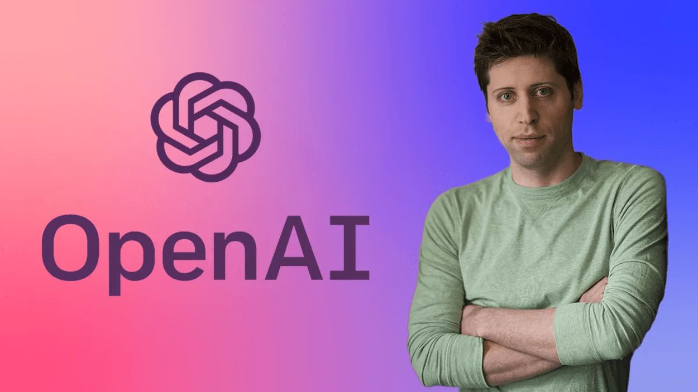

מתוך יומנו של סם אלטמן:
פורסם במקור ב LinkedIn
מתוך יומנו של סם אלטמן:
יום ההולדת השני של ChatGPT היה לפני קצת יותר מחודש, וכעת עברנו לשלב חדש שבו מודלים מבצעים חשיבה מורכבת. תחילתה של שנה חדשה היא זמן להרהורים, ולכן רציתי לשתף כמה מחשבות על הדרך שעשינו ומה שלמדתי.
כשאנחנו מתקרבים לפיתוח AGI (בינה מלאכותית כללית) חשוב לבחון את ההתקדמות שלנו. יש עוד הרבה שאיננו יודעים, אבל אנחנו מבינים יותר מבעבר. כשהקמנו את OpenAI לפני תשע שנים, האמנו ש-AGI אפשרית ויכולה להיות הטכנולוגיה המשפיעה ביותר בהיסטוריה. רצינו לפתח אותה לטובת האנושות.
ב-2022 היינו מעבדה שקטה שעבדה על "שיחה עם GPT-3.5". המשתמשים נהנו לשוחח עם המודל, וחשבנו שדמו יכול להמחיש את הפוטנציאל ולהוביל לשיפורים. השקנו את ChatGPT ב-30 בנובמבר 2022, וזה הפך לנקודת מפנה שהאיצה את מהפכת הבינה המלאכותית.
הדרך לא הייתה קלה. בשנתיים האחרונות בנינו חברה כמעט מאפס סביב טכנולוגיה חדשה, ללא מדריכים או דוגמאות. הטעויות תוקנו תוך כדי תנועה, והחוויה הייתה לעיתים מסעירה ומלחיצה.
השנים האלו היו מתגמלות אך גם מתישות ומאתגרות. אני מלא הכרת תודה – על ההזדמנות, על התמיכה מחברים, שותפים ולקוחות, ועל הצוות ב-OpenAI.
זה לא היה קל. בשנתיים האחרונות נאלצנו לבנות חברה שלמה כמעט מאפס סביב טכנולוגיה חדשה לחלוטין. לא היו מדריכים או דוגמאות ללכת לפיהן, והיינו צריכים ללמוד תוך כדי תנועה. טעויות היו בלתי נמנעות, והחוויה הייתה מסעירה ולעיתים מלחיצה מאוד.
לפני קצת יותר משנה, ביום שישי אחד, התרחש אירוע בלתי צפוי. במהלך שיחת וידאו, פוטרתי באופן מפתיע וללא התראה מוקדמת. מיד לאחר מכן, פרסם הדירקטוריון הודעה פומבית על כך. הייתי באותו הזמן בחדר מלון בלאס וגאס, וזה הרגיש כמו סיוט בלתי נתפס שהפך למציאות.
הפיטורים הפומביים הובילו לשעות ולימים סוערים. אחת החוויות המבלבלות ביותר הייתה תחושת "ערפל הקרב" – לא הצלחנו לקבל תשובות מספקות על מה בדיוק קרה או למה. בעיניי, האירוע היה כישלון בממשל תאגידי מצד כולנו, אף שהמעורבים בו היו אנשים בעלי כוונות טובות. במבט לאחור, אני מאמין שיכולתי לפעול אחרת, ואני מקווה שהיום אני מנהיג טוב יותר ומחושב יותר מאשר הייתי אז.
מאז האירוע, הצלחנו להתאושש ולעבוד בצורה מגובשת וממוקדת יותר. השקנו מחקרים פורצי דרך, גדלנו מ-100 מיליון משתמשים שבועיים ליותר מ-300 מיליון, והמשכנו להוציא לעולם טכנולוגיה שאנשים אוהבים ושבאמת פותרת בעיות אמיתיות.
החזון שלנו נשאר יציב, אך האסטרטגיה ממשיכה להתפתח. בתחילת הדרך, לא ידענו שנצטרך לבנות חברה מסחרית; חשבנו שנתמקד רק במחקר. גם לא צפינו שנצטרך כמויות עצומות של הון. יש דברים רבים שעלינו לבנות היום שלא הבנו אז, ויהיו דברים חדשים בעתיד שאנו בקושי יכולים לדמיין כעת.
בעתיד הקרוב, אנו מאמינים שבינה מלאכותית תהפוך לכלי שמשנה את התפוקה של חברות ויחידים. המטרה שלנו היא להגיע לסופר-אינטליגנציה שתאיץ את הקצב המדעי, תפתח חדשנות ותגדיל את השפע העולמי.
זה אולי נשמע כמו מדע בדיוני, אבל כבר היינו במקום הזה בעבר. אנו בטוחים שבעוד כמה שנים, כולם יראו את מה שאנחנו רואים: את הפוטנציאל העצום והצורך לפעול בזהירות ובאחריות כדי למקסם את היתרונות.
זהו תפקידנו הייחודי, ואנו אסירי תודה על ההזדמנות להיות חלק מהמשימה הזו ולשנות את העולם.
הפוטס המלא באנגלית: https://lnkd.in/dVbS6hRn
OpenAI #samaltman
